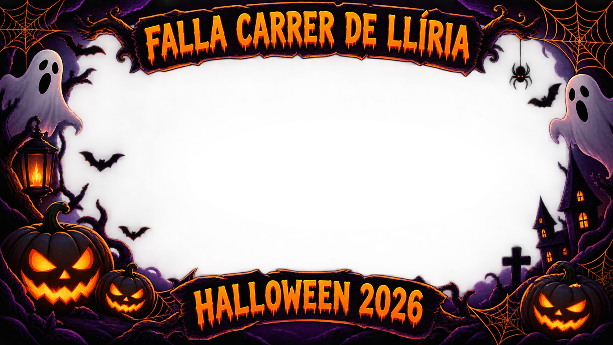

FALLA CARRER DE LLÍRIA · HALLOWEEN 2026
Activa la cámara, posa y guarda tu foto 🎃

Abrir cámara
Hacer foto
Cambiar cámara
La primera vez, permite el acceso a la cámara. Para usar la cámara, esta página debe estar publicada en una dirección HTTPS.